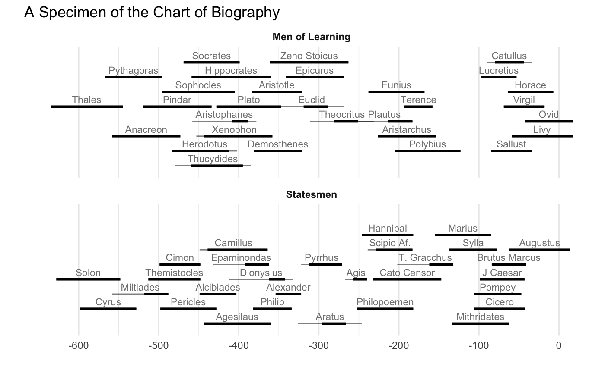

Joseph Priestley’s “A Chart of Biography”
Jeffrey B. Arnold
2/5/2018
priestley.RmdIntroduction
Joseph Priestley’s A Chart of Biography (Priestley 1765,@Priestley1778a), first published in 1764, is the, or one of the, first instances of a modern timeline (Friendley, Sigal, and Harnanasingh 2013,@Friendly2006,@Friendly,@RosenbergGrafton2013,@wiki:chart-biography,@Davis2012). The priestley package contains the data used to create the A Chart of Biography.
A Chart of Biography visualizes the lifespans of approximately two thousand individuals, described as “the most distinguished in the annals of fame” (2337 in the 1764 edition (Priestley 1764) and 2337 in the 1778 edition (Priestley 1778)). The stated criteria for selection into this list was “fame”, not “merit”.
The chart organized individuals into six divisions based on their primary occupations.
- Statesmen and Warriors
- Divines and Physicians
- Historians, Antiquarians, and Lawyers
- Poets and Artists
- Orators and Critics
The data in this package come from the index of names Chart was accompanied by a A Description of a Chart of Biography: With a Catalogue of all the Names Inserted in It, and the Dates annexed to Them.. The data was extracted from the Stephen Boyd Davis’s corrected OCR’d versions of the name indexes for the 1st (1764) and 7th (1778) editions (Priestley 1764,@Priestley1778a,@Davis2010). This included an index of the names, birth date, death date, age, and primary occupation of the individuals included in the Chart. Priestley (1764) used a concise format for these index entries:
- Arnobius fl. 303 F
- Maxentius d. 313
- Marcion fl. 134 F
- Maximian d. 313
- Sloane, Hans, d. 1752. 92 M
I parsed and normalized these entries to generate the data included in this package.
The package includes three data sets:
-
Biographies: Names, occupations, birth dates, and death dates for all individuals in the Chart of Biography -
Kings: Names and dates for the rules of major empires, used to annotate the axis of the Chart of Biography. -
Specimen: Names, birth dates, and death dates for a subset of individuals included in the chart, a Specimen of a Chart of Biography.
Replication of “A Specimen of a Chart of Biography”
The Chart of Biography was distributed with a pamphlet titled A Description of a Chart of Biography, which documented the methodology of the chart and included an index of the individuals included in the chart. Since the full chart was 2 feet x 3 feet, the Description included a smaller chart titled A Specimen of a Chart of Biography. The “Specimen” contained only 59 individuals with lifespans between 800 BCE and 0, divided into only two categories: “Men of Learning”, and “Statesmen”.

Table: “A redacted version of Priestley’s Chart of Biography (1765).” Wikimedia Commons contributors, “File:PriestleyChart.gif,” Wikimedia Commons, the free media repository, https://commons.wikimedia.org/w/index.php?title=File:PriestleyChart.gif&oldid=177413180.
{kind=link}
{kind=link}
The data frame priestley::Specimen contains the data necessary to reproduce this chart. Priestley indicated uncertainty in lifespans using dots. In our replication, the uncertain part of the lifespan is indicated using a thinner, gray line, while the certain section is indicated with a thicker, black line. The priestley::Specimen data contains four variables that are used to draw the lifespans: born_min, born_max, died_min, and died_max. The longer, uncertain line extends from the earliest birth date (born_min) to the latest death date (died_max), while the shorter certain line extends from the latest birth date (born_max) to the earliest death date (died_min). In some very uncertain cases, only born_min and died_max are available.
library("ggplot2")
ggplot(priestley::Specimen) +
geom_segment(aes(y = row, yend = row, x = born_min, xend = died_max),
alpha = 0.5, size = 0.5) +
geom_segment(aes(y = row, yend = row, x = born_max, xend = died_min),
size = 1) +
geom_text(aes(x = (born_min + died_max) * 0.5, y = row, label = name),
size = 3, vjust = "bottom", nudge_y = 0.25, color = "gray50") +
facet_wrap(~ division, ncol = 1) +
scale_x_continuous("",
minor_breaks = seq(-600, 0, 50),
breaks = seq(-600, 0, 100)) +
scale_y_continuous("", expand = c(0.1, 0.1)) +
ggtitle("A Specimen of the Chart of Biography") +
theme_minimal() +
theme(panel.grid.minor.y = element_blank(),
panel.grid.major.y = element_blank(),
strip.background = element_rect(fill = "white", colour = NA),
axis.ticks.y = element_blank(),
axis.text.y = element_blank(),
strip.text = element_text(face = "bold"))
Replication of “The Chart of Biography”
The full chart contained over 2,000 individuals, and in its physical form was “about three feet in length, and two feet in breadth”. The data frame priestley::Biographies contains data for all the the individuals in the chart extracted from the associated name index.
Name Index in “The Chart of Biography”
The individuals in the The Chart of Biography (1778 edition) can be viewed in the following table.
Davis, Stephen Boyd. 2010. “Names from Desc Chart 1764 OCRcorrected.pdf.” https://drive.google.com/file/d/0B4KIGf4GncycZGRmNWY4Y2QtZjNjNS00OGEzLWE0MjctMzY0NzFhM2I2YjFj/view?authkey=CPGfreEB.
———. 2012. “History on the Line: Time as Dimension.” DesignIssues. https://doi.org/10.1162/DESI_a_00171.
Friendley, Michael, Matthes Sigal, and Derek Harnanasingh. 2013. “The Milestones Project: A Database for the History of Data Visualization.” http://www.datavis.ca/papers/MilestonesProject.pdf.
Friendly, Michael. 2006. “A Brief History of Data Visualization.” In Handbook of Computational Statistics: Data Visualization, edited by C. Chen, W. Härdle, and A Unwin. Vol. III. Heidelberg: Springer-Verlag.
———. n.d. “Gallery of Data Visualization - Historical Milestones.” http://www.datavis.ca/gallery/historical.php.
Priestley, Joseph. 1764. A Chart of Biography. 1st ed.
———. 1765. “A Chart of Biography to the Right Honourable Hugh Lord Willoughby of Parham This Chart Is with the Greatest Respect and Gratitude Inscribed by His Lordship’s Most Obedient and Most Humble Servant Joseph Priestley.” London. http://explore.bl.uk/BLVU1:LSCOP-ALL:BLLSFX3360000000234303.
———. 1778. A Description of a Chart of Biography; with a Catalogue of All the Names Inserted in It, and the Dates Annexed to Them. 7th ed. London: J. Johnson.
Rosenberg, Daniel, and Anthony Grafton. 2013. Cartographies of Time: History of the Timeline. Princeton Architectural Press.
Wikipedia contributors. 2018. “A Chart of Biography — Wikipedia, the Free Encyclopedia.” https://en.wikipedia.org/w/index.php?title=A_Chart_of_Biography&oldid=849440096.